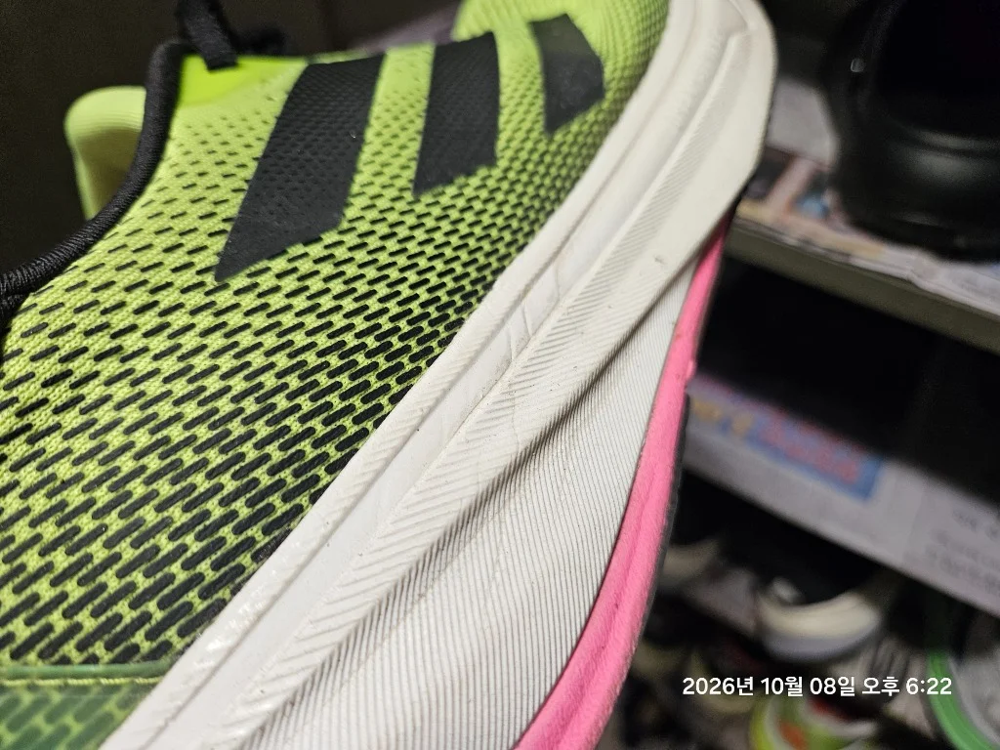

러닝머신 속도 10이 야외 6분 페이스보다
쉽게 느껴지는 이유 (경사도 1%의 비밀)
- 바람이 없는 실내: 러닝머신에서는 앞바람을 가를 필요가 없어 같은 속도라도 야외보다 약 2~10% 힘을 덜 씁니다.
- 경사도 1.0% 맞추기: 러닝머신 경사도를 1.0%로 올리면 야외에서 달릴 때와 심폐 운동량이 거의 똑같아집니다.
- 뒤로 차는 근육 차이: 러닝머신은 벨트가 뒤로 돌아가 엉덩이와 뒷허벅지 힘을 덜 쓰므로, 일주일에 한두 번은 밖에서도 뛰어주는 것이 좋습니다.
1. 러닝머신 '속도 10'은 왜 밖에서 달릴 때보다 쉬울까요?
러닝머신 계기판에서 속도를 10.0 km/h로 맞추면, 계산상 1km를 6분에 달리는 '6분 페이스'입니다. 그런데 헬스장에서 이 속도로 5km를 뛸 때는 숨도 덜 차고 편했는데, 막상 한강이나 공원에 나가 6분 페이스로 뛰면 금방 숨이 차고 다리가 무거워지는 경험을 많이 합니다.
기계가 고장 나서가 아니라, 바람 저항이 없는 실내 환경과 발밑 바닥이 움직이는 방식의 차이 때문에 생기는 자연스러운 현상입니다.
2. 바람이 없는 공간: 공기 저항과 '경사도 1%'의 비밀
야외에서 달릴 때 우리 몸은 앞으로 나아가면서 공기를 정면으로 밀어내야 합니다. 시속 10~15km 정도로 달릴 때도 앞바람을 이겨내는 데 전체 에너지의 약 2~8%를 씁니다. 반면 제자리에서 뛰는 실내 러닝머신은 맞바람이 전혀 없습니다.
영국 브라이튼 대학교 연구팀이 러너들의 산소 소비량을 직접 재어 본 결과, 다음과 같은 간단한 기준을 찾아냈습니다.
속도가 시속 11km(5분 27초 페이스) 이상 빨라질수록 바람 저항도 커집니다. 따라서 러닝머신 경사도를 0%가 아닌 1% 정도로 살짝 올리고 뛰어야 야외 달리기와 비슷한 심폐 훈련 효과를 볼 수 있습니다.
3. 땅을 차는 힘의 차이: 뒷허벅지와 엉덩이가 덜 일합니다
야외에서는 내 몸을 앞으로 밀어내기 위해 발바닥으로 땅을 힘껏 뒤로 차야 합니다. 이때 엉덩이와 뒷허벅지 근육이 강하게 힘을 씁니다.
반면 러닝머신은 모터가 벨트를 알아서 뒤로 보내줍니다. 러너는 발을 위로 들었다가 내리기만 해도 달릴 수 있어서, 엉덩이와 뒷허벅지 근육을 야외보다 15~20% 덜 쓰게 됩니다. 그래서 러닝머신에서만 몇 달 동안 연습하다가 야외 마라톤 대회에 나가면, 후반부에 뒷허벅지나 종아리에 쥐가 나기 쉽습니다.
아래 사진은 필자가 러닝머신에서 600km, 야외에서 100km 이상을 달려 총 700km를 신은 아디다스 슈퍼노바 라이즈 2입니다. 벨트 위에서 600km를 달릴 때는 모터 도움 덕분에 다리 뒤쪽 피로가 덜했지만, 야외 아스팔트로 나오면 발로 땅을 직접 밀어야 해서 바닥의 딱딱함과 미끄럼 방지 느낌이 확연히 다르게 다가옵니다. 날씨가 궂은 날에는 러닝머신으로 속도 감각을 유지하되, 일주일에 1~2번은 꼭 밖에서 달리며 다리 뒷근육을 깨워주는 것이 가장 좋습니다.

4. 러닝머신을 200% 잘 쓰는 3가지 요령
- 경사도는 항상 1%로 맞추기: 0%는 살짝 내리막을 뛰는 것과 비슷합니다. 평지 야외 달리기와 맞추려면 1.0%가 기본입니다.
- 일정한 발걸음 수 연습하기: 러닝머신은 속도가 딱 고정되어 있어 보폭과 발걸음 수를 일정하게 맞추는 연습을 하기에 아주 좋습니다.
- 주말 장거리 달리기는 밖에서 하기: 평일에는 편하게 러닝머신을 타더라도, 주말의 긴 달리기는 밖에서 직접 땅을 밟으며 다리 힘을 기르세요.
🏃 헬스장 러닝머신 속도(km/h), 야외 페이스로 얼마일까?
맞바람 없는 실내 트레드밀에서 야외와 동일한 부하를 내는 '경사도 1.0%의 법칙'과 주요 거리별 예상 완주 시간을 1초 만에 확인하세요.
🏃 트레드밀 속도 ⇄ 페이스 1초 환산기 바로가기 ›📚 학술 출처 및 과학적 근거 (References)
- Jones, A. M., & Doust, J. H. (1996). A 1% treadmill grade reflects the energetic cost of outdoor running. Journal of Sports Sciences, 14(4), 321-327. [경사도 1% 법칙의 원천 논문]
- Pugh, L. G. (1971). The influence of wind resistance in running under outdoor conditions and the energy expenditure of running in oxygen. The Journal of Physiology, 213(2), 255-276. [달리기 공기저항 에너지 소모 분석]
- Van Hooren, B., et al. (2020). Is motorized treadmill running biomechanically comparable to overground running? A systematic review and meta-analysis. Sports Medicine, 50(4), 785-813. [트레드밀 vs 로드러닝 생체역학 메타분석]